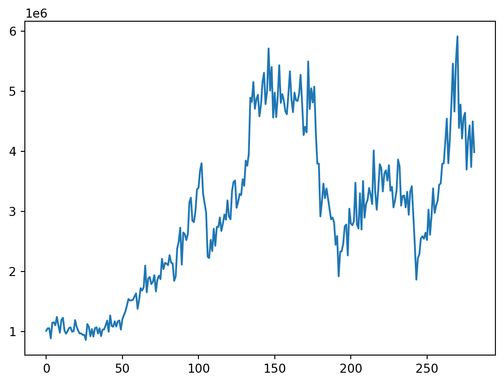
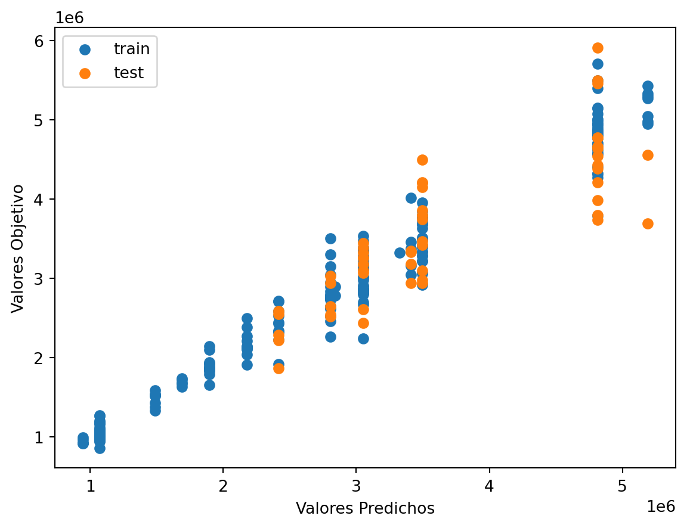
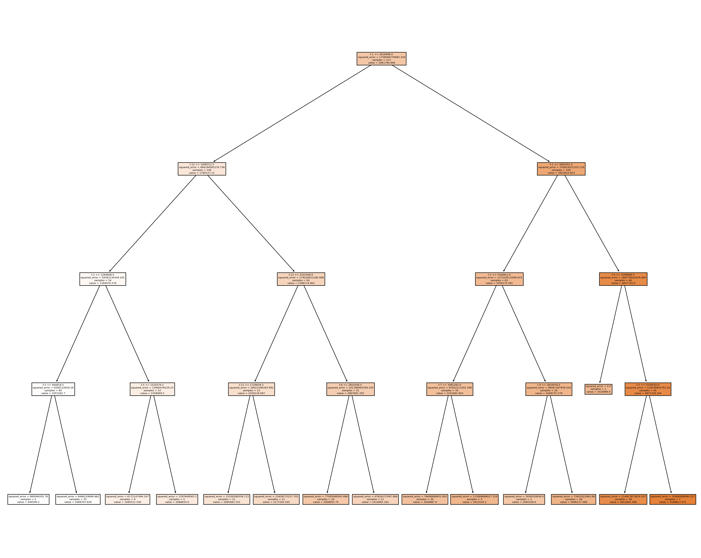
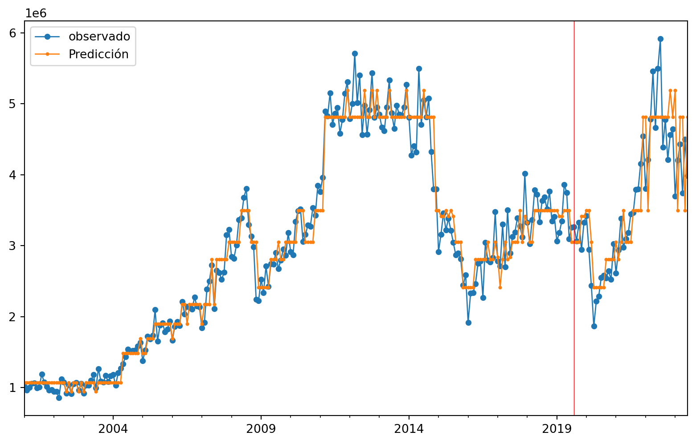
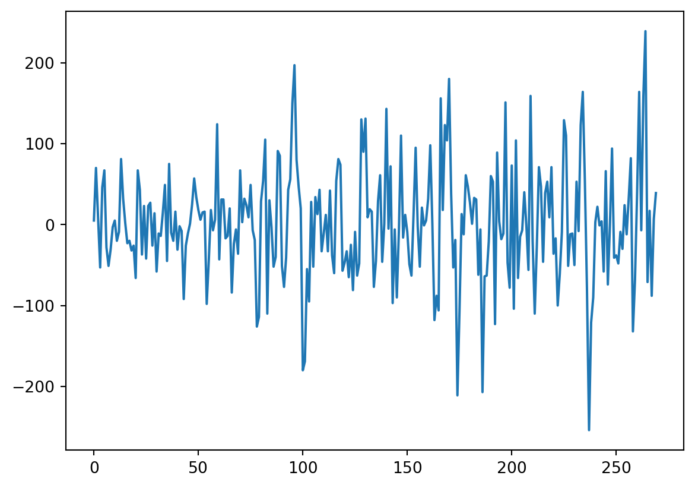
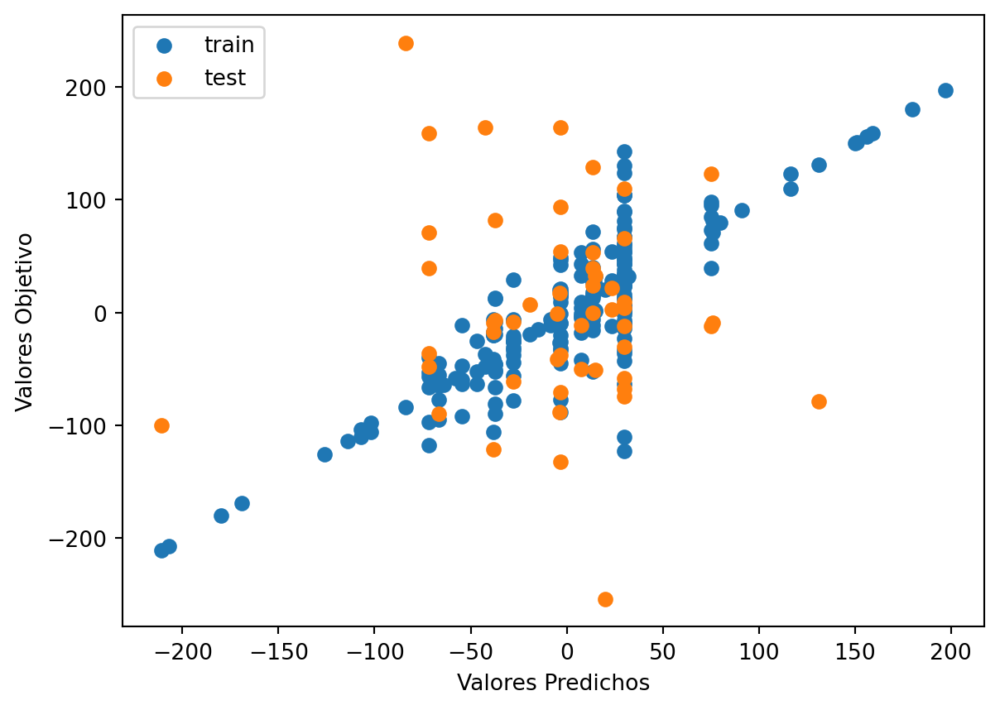
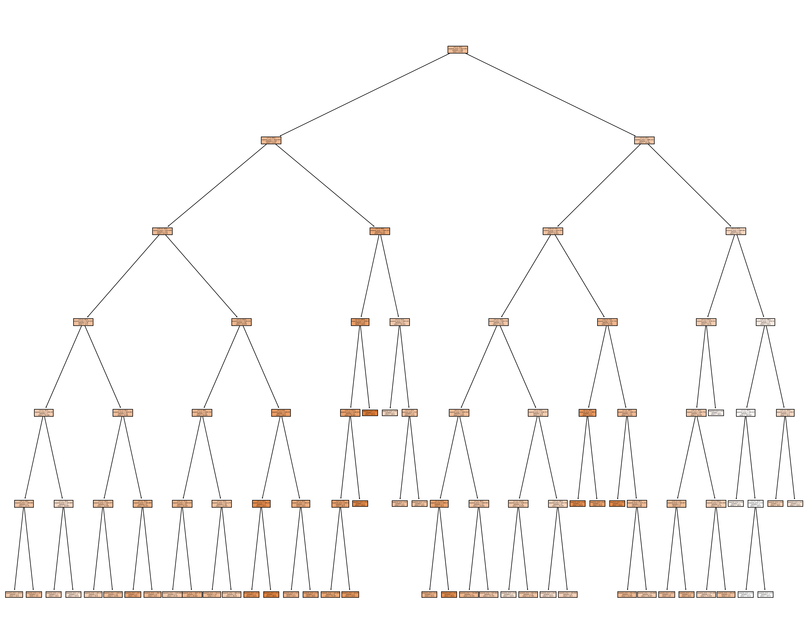
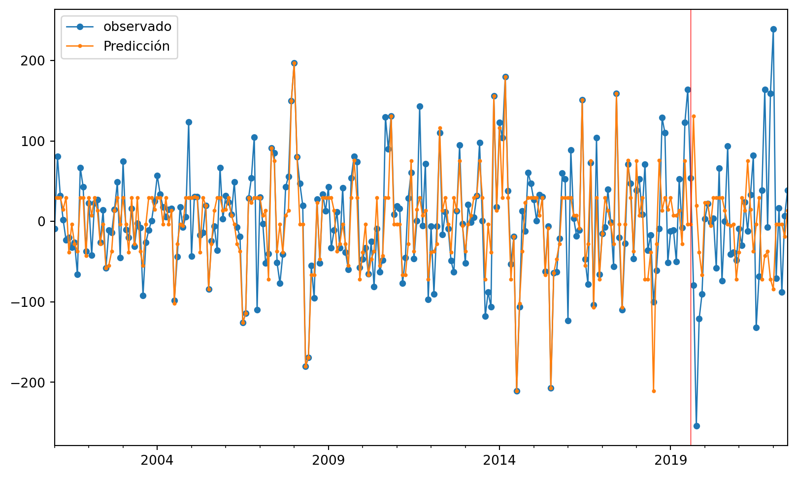

'C:\\Users\\dofca\\Desktop\\series'Predicción 1 paso adelante usando 12 retardos
Vamos a importar la bases de datos y a convertirlas en objetos de series de Tiempo. \(\{X_t\}\)
Code
# librerias
import pandas as pd
import numpy as np
import matplotlib.pylab as plt
import sklearn
import openpyxl
from skforecast.ForecasterAutoreg import ForecasterAutoreg
import warnings
print(f"Matplotlib Version: {plt.__version__}")
print(f"Pandas Version: {pd.__version__}")
print(f"Numpy Version: {np.__version__}")
print(f"Sklearn: {sklearn.__version__}")Matplotlib Version: 1.25.2
Pandas Version: 2.0.3
Numpy Version: 1.25.2
Sklearn: 1.3.1Code
| Mes | Total | |
|---|---|---|
| 0 | 2000-01-01 | 1011676 |
| 1 | 2000-02-01 | 1054098 |
| 2 | 2000-03-01 | 1053546 |
| 3 | 2000-04-01 | 886359 |
| 4 | 2000-05-01 | 1146258 |
| ... | ... | ... |
| 277 | 2023-02-01 | 4202234 |
| 278 | 2023-03-01 | 4431911 |
| 279 | 2023-04-01 | 3739214 |
| 280 | 2023-05-01 | 4497862 |
| 281 | 2023-06-01 | 3985981 |
282 rows × 2 columns
<class 'pandas.core.frame.DataFrame'>
RangeIndex: 282 entries, 0 to 281
Data columns (total 2 columns):
# Column Non-Null Count Dtype
--- ------ -------------- -----
0 Mes 282 non-null datetime64[ns]
1 Total 282 non-null int32
dtypes: datetime64[ns](1), int32(1)
memory usage: 3.4 KB
NoneCode
<class 'pandas.core.series.Series'>
Numero de filas con valores faltantes: 0.01 Árboles de decisión
1.0.1 Creación de los rezagos
Debido al análisis previo tomaremos los rezagos de 3 días atrás para poder predecir un paso adelante.
Code
Empty DataFrame
Columns: []
Index: []
Empty DataFrame
Columns: []
Index: []Code
DatetimeIndex(['2000-01-31', '2000-02-29', '2000-03-31', '2000-04-30',
'2000-05-31', '2000-06-30', '2000-07-31', '2000-08-31',
'2000-09-30', '2000-10-31',
...
'2022-09-30', '2022-10-31', '2022-11-30', '2022-12-31',
'2023-01-31', '2023-02-28', '2023-03-31', '2023-04-30',
'2023-05-31', '2023-06-30'],
dtype='datetime64[ns]', length=282, freq='M')
0
2000-01-31 1011676
2000-02-29 1054098
2000-03-31 1053546
2000-04-30 886359
2000-05-31 1146258
... ...
2023-02-28 4202234
2023-03-31 4431911
2023-04-30 3739214
2023-05-31 4497862
2023-06-30 3985981
[282 rows x 1 columns]Code
t-12 t-11 t-10 t-9 t-8 t-7 \
2000-01-31 NaN NaN NaN NaN NaN NaN
2000-02-29 NaN NaN NaN NaN NaN NaN
2000-03-31 NaN NaN NaN NaN NaN NaN
2000-04-30 NaN NaN NaN NaN NaN NaN
2000-05-31 NaN NaN NaN NaN NaN NaN
... ... ... ... ... ... ...
2023-02-28 4209198.0 4780210.0 5460531.0 4662521.0 5497617.0 5913682.0
2023-03-31 4780210.0 5460531.0 4662521.0 5497617.0 5913682.0 4388737.0
2023-04-30 5460531.0 4662521.0 5497617.0 5913682.0 4388737.0 4778520.0
2023-05-31 4662521.0 5497617.0 5913682.0 4388737.0 4778520.0 4213182.0
2023-06-30 5497617.0 5913682.0 4388737.0 4778520.0 4213182.0 4562248.0
t-6 t-5 t-4 t-3 t-2 t-1
2000-01-31 NaN NaN NaN NaN NaN NaN
2000-02-29 NaN NaN NaN NaN NaN 1011676.0
2000-03-31 NaN NaN NaN NaN 1011676.0 1054098.0
2000-04-30 NaN NaN NaN 1011676.0 1054098.0 1053546.0
2000-05-31 NaN NaN 1011676.0 1054098.0 1053546.0 886359.0
... ... ... ... ... ... ...
2023-02-28 4388737.0 4778520.0 4213182.0 4562248.0 4642084.0 3696188.0
2023-03-31 4778520.0 4213182.0 4562248.0 4642084.0 3696188.0 4202234.0
2023-04-30 4213182.0 4562248.0 4642084.0 3696188.0 4202234.0 4431911.0
2023-05-31 4562248.0 4642084.0 3696188.0 4202234.0 4431911.0 3739214.0
2023-06-30 4642084.0 3696188.0 4202234.0 4431911.0 3739214.0 4497862.0
[282 rows x 12 columns] t-12 t-11 t-10 t-9 t-8 t-7 \
2000-01-31 NaN NaN NaN NaN NaN NaN
2000-02-29 NaN NaN NaN NaN NaN NaN
2000-03-31 NaN NaN NaN NaN NaN NaN
2000-04-30 NaN NaN NaN NaN NaN NaN
2000-05-31 NaN NaN NaN NaN NaN NaN
2000-06-30 NaN NaN NaN NaN NaN NaN
2000-07-31 NaN NaN NaN NaN NaN NaN
2000-08-31 NaN NaN NaN NaN NaN 1011676.0
2000-09-30 NaN NaN NaN NaN 1011676.0 1054098.0
2000-10-31 NaN NaN NaN 1011676.0 1054098.0 1053546.0
2000-11-30 NaN NaN 1011676.0 1054098.0 1053546.0 886359.0
2000-12-31 NaN 1011676.0 1054098.0 1053546.0 886359.0 1146258.0
2001-01-31 1011676.0 1054098.0 1053546.0 886359.0 1146258.0 1153956.0
2001-02-28 1054098.0 1053546.0 886359.0 1146258.0 1153956.0 1104408.0
t-6 t-5 t-4 t-3 t-2 t-1 \
2000-01-31 NaN NaN NaN NaN NaN NaN
2000-02-29 NaN NaN NaN NaN NaN 1011676.0
2000-03-31 NaN NaN NaN NaN 1011676.0 1054098.0
2000-04-30 NaN NaN NaN 1011676.0 1054098.0 1053546.0
2000-05-31 NaN NaN 1011676.0 1054098.0 1053546.0 886359.0
2000-06-30 NaN 1011676.0 1054098.0 1053546.0 886359.0 1146258.0
2000-07-31 1011676.0 1054098.0 1053546.0 886359.0 1146258.0 1153956.0
2000-08-31 1054098.0 1053546.0 886359.0 1146258.0 1153956.0 1104408.0
2000-09-30 1053546.0 886359.0 1146258.0 1153956.0 1104408.0 1242391.0
2000-10-31 886359.0 1146258.0 1153956.0 1104408.0 1242391.0 1102913.0
2000-11-30 1146258.0 1153956.0 1104408.0 1242391.0 1102913.0 981716.0
2000-12-31 1153956.0 1104408.0 1242391.0 1102913.0 981716.0 1192681.0
2001-01-31 1104408.0 1242391.0 1102913.0 981716.0 1192681.0 1228398.0
2001-02-28 1242391.0 1102913.0 981716.0 1192681.0 1228398.0 1017195.0
t
2000-01-31 1011676
2000-02-29 1054098
2000-03-31 1053546
2000-04-30 886359
2000-05-31 1146258
2000-06-30 1153956
2000-07-31 1104408
2000-08-31 1242391
2000-09-30 1102913
2000-10-31 981716
2000-11-30 1192681
2000-12-31 1228398
2001-01-31 1017195
2001-02-28 964437 Code
t-12 t-11 t-10 t-9 t-8 t-7 \
2001-01-31 1011676.0 1054098.0 1053546.0 886359.0 1146258.0 1153956.0
2001-02-28 1054098.0 1053546.0 886359.0 1146258.0 1153956.0 1104408.0
2001-03-31 1053546.0 886359.0 1146258.0 1153956.0 1104408.0 1242391.0
2001-04-30 886359.0 1146258.0 1153956.0 1104408.0 1242391.0 1102913.0
2001-05-31 1146258.0 1153956.0 1104408.0 1242391.0 1102913.0 981716.0
... ... ... ... ... ... ...
2023-02-28 4209198.0 4780210.0 5460531.0 4662521.0 5497617.0 5913682.0
2023-03-31 4780210.0 5460531.0 4662521.0 5497617.0 5913682.0 4388737.0
2023-04-30 5460531.0 4662521.0 5497617.0 5913682.0 4388737.0 4778520.0
2023-05-31 4662521.0 5497617.0 5913682.0 4388737.0 4778520.0 4213182.0
2023-06-30 5497617.0 5913682.0 4388737.0 4778520.0 4213182.0 4562248.0
t-6 t-5 t-4 t-3 t-2 t-1 \
2001-01-31 1104408.0 1242391.0 1102913.0 981716.0 1192681.0 1228398.0
2001-02-28 1242391.0 1102913.0 981716.0 1192681.0 1228398.0 1017195.0
2001-03-31 1102913.0 981716.0 1192681.0 1228398.0 1017195.0 964437.0
2001-04-30 981716.0 1192681.0 1228398.0 1017195.0 964437.0 1002450.0
2001-05-31 1192681.0 1228398.0 1017195.0 964437.0 1002450.0 1058457.0
... ... ... ... ... ... ...
2023-02-28 4388737.0 4778520.0 4213182.0 4562248.0 4642084.0 3696188.0
2023-03-31 4778520.0 4213182.0 4562248.0 4642084.0 3696188.0 4202234.0
2023-04-30 4213182.0 4562248.0 4642084.0 3696188.0 4202234.0 4431911.0
2023-05-31 4562248.0 4642084.0 3696188.0 4202234.0 4431911.0 3739214.0
2023-06-30 4642084.0 3696188.0 4202234.0 4431911.0 3739214.0 4497862.0
t
2001-01-31 1017195
2001-02-28 964437
2001-03-31 1002450
2001-04-30 1058457
2001-05-31 1068023
... ...
2023-02-28 4202234
2023-03-31 4431911
2023-04-30 3739214
2023-05-31 4497862
2023-06-30 3985981
[270 rows x 13 columns]3510Code
# Split data Serie Original
Orig_Split = df1_Ori.values
# split into lagged variables and original time series
X1 = Orig_Split[:, 0:-1] # slice all rows and start with column 0 and go up to but not including the last column
y1 = Orig_Split[:,-1] # slice all rows and last column, essentially separating out 't' column
print(X1)
print('Respuestas \n',y1)[[1011676. 1054098. 1053546. ... 981716. 1192681. 1228398.]
[1054098. 1053546. 886359. ... 1192681. 1228398. 1017195.]
[1053546. 886359. 1146258. ... 1228398. 1017195. 964437.]
...
[5460531. 4662521. 5497617. ... 3696188. 4202234. 4431911.]
[4662521. 5497617. 5913682. ... 4202234. 4431911. 3739214.]
[5497617. 5913682. 4388737. ... 4431911. 3739214. 4497862.]]
Respuestas
[1017195. 964437. 1002450. 1058457. 1068023. 996736. 1005867. 1189605.
1078781. 1013772. 965973. 968599. 943702. 945935. 859303. 1123902.
1076509. 921463. 1040876. 915457. 1055414. 1070342. 966897. 1055590.
923427. 1033043. 1034233. 1101056. 1181888. 995297. 1267598. 1092850.
1079472. 1169195. 1082836. 1167628. 1183399. 1031826. 1206657. 1271618.
1335727. 1433647. 1541103. 1516523. 1519458. 1529291. 1585709. 1633370.
1378980. 1529265. 1722081. 1682450. 1737198. 2097853. 1653833. 1882740.
1908016. 1788905. 1826199. 1938567. 1668171. 1862024. 1929864. 1872161.
2211681. 2039364. 2141958. 2129881. 2104243. 2271572. 2146547. 2134504.
1843668. 1914770. 2384657. 2497750. 2727980. 2114259. 2648147. 2621002.
2523170. 2623649. 3152653. 3227536. 2842306. 2822470. 3007288. 3365420.
3392615. 3675654. 3801685. 3294187. 3133994. 2981105. 2245379. 2224271.
2525698. 2340118. 2711332. 2427571. 2742519. 2738083. 2898600. 2673470.
2795983. 2948687. 2861294. 3182972. 2913433. 2869156. 3337903. 3490978.
3513331. 3060628. 3157626. 3291236. 3271661. 3535759. 3426095. 3845531.
3760176. 3958572. 4893312. 4823094. 5153710. 4708737. 4866229. 4941645.
4582401. 4772996. 5147330. 5306738. 4785773. 4999318. 5712355. 5010929.
5403375. 4563431. 4976905. 4570780. 4910403. 5432930. 4807338. 4951628.
4849196. 4667767. 4617842. 4949487. 5332470. 4870839. 4652297. 4977706.
4849996. 4837983. 4948665. 5272122. 4808832. 4271442. 4408181. 4316676.
5495867. 4704814. 5048930. 4813091. 5077247. 4322278. 3794686. 3794711.
2916976. 3160957. 3461944. 3219706. 3381084. 3217408. 3043778. 2868451.
2898168. 2815522. 2444535. 2588994. 1919053. 2328723. 2334998. 2463793.
2751470. 2780512. 2266997. 3044377. 2797686. 2770014. 2833622. 3477094.
2785044. 2716024. 3300421. 2697992. 3505436. 2895612. 3125483. 3191598.
3389679. 3277516. 3122237. 4014818. 3324889. 3027603. 3365116. 3786537.
3719410. 3331933. 3632055. 3684399. 3512842. 3768666. 3343509. 3407819.
3066110. 3183071. 3344850. 3862819. 3748342. 3096363. 3255830. 3264261.
3067349. 3326497. 2943625. 3330051. 3419466. 2943626. 2439036. 1864239.
2221172. 2289482. 2551988. 2584767. 2544874. 2644954. 2523372. 3028837.
2610936. 2938994. 3383554. 2976372. 3096913. 3182216. 3444158. 3465143.
3792236. 3799111. 4155805. 4544551. 3801609. 4209198. 4780210. 5460531.
4662521. 5497617. 5913682. 4388737. 4778520. 4213182. 4562248. 4642084.
3696188. 4202234. 4431911. 3739214. 4497862. 3985981.]2 Árbol para Serie Original
2.0.0.1 Entrenamiento, Validación y prueba
Code
Y1 = y1
print('Complete Observations for Target after Supervised configuration: %d' %len(Y1))
traintarget_size = int(len(Y1) * 0.70)
valtarget_size = int(len(Y1) * 0.10)+1# Set split
testtarget_size = int(len(Y1) * 0.20)# Set split
print(traintarget_size,valtarget_size,testtarget_size)
print('Train + Validation + Test: %d' %(traintarget_size+valtarget_size+testtarget_size))Complete Observations for Target after Supervised configuration: 270
189 28 54
Train + Validation + Test: 271Code
# Target Train-Validation-Test split(70-10-20)
train_target, val_target,test_target = Y1[0:traintarget_size], Y1[(traintarget_size):(traintarget_size+valtarget_size)],Y1[(traintarget_size+valtarget_size):len(Y1)]
print('Observations for Target: %d' % (len(Y1)))
print('Training Observations for Target: %d' % (len(train_target)))
print('Validation Observations for Target: %d' % (len(val_target)))
print('Test Observations for Target: %d' % (len(test_target)))Observations for Target: 270
Training Observations for Target: 189
Validation Observations for Target: 28
Test Observations for Target: 53Code
# Features Train--Val-Test split
trainfeature_size = int(len(X1) * 0.70)
valfeature_size = int(len(X1) * 0.10)+1# Set split
testfeature_size = int(len(X1) * 0.20)# Set split
train_feature, val_feature,test_feature = X1[0:traintarget_size],X1[(traintarget_size):(traintarget_size+valtarget_size)] ,X1[(traintarget_size+valtarget_size):len(Y1)]
print('Observations for Feature: %d' % (len(X1)))
print('Training Observations for Feature: %d' % (len(train_feature)))
print('Validation Observations for Feature: %d' % (len(val_feature)))
print('Test Observations for Feature: %d' % (len(test_feature)))Observations for Feature: 270
Training Observations for Feature: 189
Validation Observations for Feature: 28
Test Observations for Feature: 532.0.1 Árbol
Code
# Decision Tree Regresion Model
from sklearn.tree import DecisionTreeRegressor
# Create a decision tree regression model with default arguments
decision_tree_Orig = DecisionTreeRegressor() # max-depth not set
# The maximum depth of the tree. If None, then nodes are expanded until all leaves are pure or until all leaves contain less than min_samples_split samples.
# Fit the model to the training features(covariables) and targets(respuestas)
decision_tree_Orig.fit(train_feature, train_target)
# Check the score on train and test
print("Coeficiente R2 sobre el conjunto de entrenamiento:",decision_tree_Orig.score(train_feature, train_target))
print("Coeficiente R2 sobre el conjunto de Validación:",decision_tree_Orig.score(val_feature,val_target)) # predictions are horrible if negative value, no relationship if 0
print("el RECM sobre validación es:",(((decision_tree_Orig.predict(val_feature)-val_target)**2).mean()) )Coeficiente R2 sobre el conjunto de entrenamiento: 1.0
Coeficiente R2 sobre el conjunto de Validación: -1.7548809186918701
el RECM sobre validación es: 332309503244.0Vemos que el R2 para los datos de validación es bueno así sin ningún ajuste, Se relizara un ajuste de la profundidad como hiperparametro para ver si mejora dicho valor
Code
# Find the best Max Depth
# Loop through a few different max depths and check the performance
# Try different max depths. We want to optimize our ML models to make the best predictions possible.
# For regular decision trees, max_depth, which is a hyperparameter, limits the number of splits in a tree.
# You can find the best value of max_depth based on the R-squared score of the model on the test set.
for d in [2, 3, 4, 5,6,7,8,9,10,11,12,13,14,15]:
# Create the tree and fit it
decision_tree_Orig = DecisionTreeRegressor(max_depth=d)
decision_tree_Orig.fit(train_feature, train_target)
# Print out the scores on train and test
print('max_depth=', str(d))
print("Coeficiente R2 sobre el conjunto de entrenamiento:",decision_tree_Orig.score(train_feature, train_target))
print("Coeficiente R2 sobre el conjunto de validación:",decision_tree_Orig.score(val_feature, val_target), '\n') # You want the test score to be positive and high
print("el RECM sobre el conjunto de validación es:",sklearn.metrics.mean_squared_error(decision_tree_Orig.predict(val_feature),val_target, squared=False))max_depth= 2
Coeficiente R2 sobre el conjunto de entrenamiento: 0.9380991089808784
Coeficiente R2 sobre el conjunto de validación: -2.051209928658386
el RECM sobre el conjunto de validación es: 606674.875354811
max_depth= 3
Coeficiente R2 sobre el conjunto de entrenamiento: 0.9664178293704504
Coeficiente R2 sobre el conjunto de validación: -1.7135186026890032
el RECM sobre el conjunto de validación es: 572118.9945819594
max_depth= 4
Coeficiente R2 sobre el conjunto de entrenamiento: 0.9768825370828798
Coeficiente R2 sobre el conjunto de validación: -1.7037887014868796
el RECM sobre el conjunto de validación es: 571092.3459406185
max_depth= 5
Coeficiente R2 sobre el conjunto de entrenamiento: 0.9851230357060198
Coeficiente R2 sobre el conjunto de validación: -1.832333851372148
el RECM sobre el conjunto de validación es: 584510.3243444414
max_depth= 6
Coeficiente R2 sobre el conjunto de entrenamiento: 0.9925782041053538
Coeficiente R2 sobre el conjunto de validación: -2.2041965658843563
el RECM sobre el conjunto de validación es: 621698.1004856585
max_depth= 7
Coeficiente R2 sobre el conjunto de entrenamiento: 0.9978144610458868
Coeficiente R2 sobre el conjunto de validación: -2.3497128586740375
el RECM sobre el conjunto de validación es: 635658.3486494402
max_depth= 8
Coeficiente R2 sobre el conjunto de entrenamiento: 0.9994408733552114
Coeficiente R2 sobre el conjunto de validación: -2.811262198389598
el RECM sobre el conjunto de validación es: 678038.5380785092
max_depth= 9
Coeficiente R2 sobre el conjunto de entrenamiento: 0.9998981374422563
Coeficiente R2 sobre el conjunto de validación: -2.0147327960575905
el RECM sobre el conjunto de validación es: 603037.5808233338
max_depth= 10
Coeficiente R2 sobre el conjunto de entrenamiento: 0.9999911411632353
Coeficiente R2 sobre el conjunto de validación: -2.1214885273158406
el RECM sobre el conjunto de validación es: 613621.8796439593
max_depth= 11
Coeficiente R2 sobre el conjunto de entrenamiento: 0.9999995801959258
Coeficiente R2 sobre el conjunto de validación: -2.1521096826836246
el RECM sobre el conjunto de validación es: 616624.2860853936
max_depth= 12
Coeficiente R2 sobre el conjunto de entrenamiento: 0.9999999961093721
Coeficiente R2 sobre el conjunto de validación: -2.5439260490331046
el RECM sobre el conjunto de validación es: 653826.1563723243
max_depth= 13
Coeficiente R2 sobre el conjunto de entrenamiento: 1.0
Coeficiente R2 sobre el conjunto de validación: -2.7126672435521564
el RECM sobre el conjunto de validación es: 669210.8571930343
max_depth= 14
Coeficiente R2 sobre el conjunto de entrenamiento: 1.0
Coeficiente R2 sobre el conjunto de validación: -1.9050269567306248
el RECM sobre el conjunto de validación es: 591963.6624602235
max_depth= 15
Coeficiente R2 sobre el conjunto de entrenamiento: 1.0
Coeficiente R2 sobre el conjunto de validación: -2.3128435879041693
el RECM sobre el conjunto de validación es: 632150.42019757Note que los scores para el conjunto de validación son negativos para todas las profundidades evaluadas. Ahora uniremos validacion y entrenamiento para re para reestimar los parametros
Code
print(type(train_feature))
print(type(val_feature))
#######
print(type(train_target))
print(type(val_target))
####
print(train_feature.shape)
print(val_feature.shape)
#####
####
print(train_target.shape)
print(val_target.shape)
###Concatenate Validation and test
train_val_feature=np.concatenate((train_feature,val_feature),axis=0)
train_val_target=np.concatenate((train_target,val_target),axis=0)
print(train_val_feature.shape)
print(train_val_target.shape)<class 'numpy.ndarray'>
<class 'numpy.ndarray'>
<class 'numpy.ndarray'>
<class 'numpy.ndarray'>
(189, 12)
(28, 12)
(189,)
(28,)
(217, 12)
(217,)Code
# Use the best max_depth
decision_tree_Orig = DecisionTreeRegressor(max_depth=4) # fill in best max depth here
decision_tree_Orig.fit(train_val_feature, train_val_target)
# Predict values for train and test
train_val_prediction = decision_tree_Orig.predict(train_val_feature)
test_prediction = decision_tree_Orig.predict(test_feature)
# Scatter the predictions vs actual values
plt.scatter(train_val_prediction, train_val_target, label='train') # blue
plt.scatter(test_prediction, test_target, label='test') # orange
# Agrega títulos a los ejes
plt.xlabel('Valores Predichos') # Título para el eje x
plt.ylabel('Valores Objetivo') # Título para el eje y
# Muestra una leyenda
plt.legend()
plt.show()
print("Raíz de la Pérdida cuadrática Entrenamiento:",sklearn.metrics.mean_squared_error( train_val_prediction, train_val_target,squared=False))
print("Raíz de la Pérdida cuadrática Prueba:",sklearn.metrics.mean_squared_error(test_prediction, test_target,squared=False))
Raíz de la Pérdida cuadrática Entrenamiento: 237470.97155102508
Raíz de la Pérdida cuadrática Prueba: 512170.57525904087Code
|--- feature_11 <= 2818996.00
| |--- feature_0 <= 1406313.50
| | |--- feature_11 <= 1269608.00
| | | |--- feature_7 <= 944818.50
| | | | |--- value: [944508.20]
| | | |--- feature_7 > 944818.50
| | | | |--- value: [1068707.63]
| | |--- feature_11 > 1269608.00
| | | |--- feature_7 <= 1524374.50
| | | | |--- value: [1485522.56]
| | | |--- feature_7 > 1524374.50
| | | | |--- value: [1688654.00]
| |--- feature_0 > 1406313.50
| | |--- feature_0 <= 2101048.00
| | | |--- feature_0 <= 1729639.50
| | | | |--- value: [1895482.33]
| | | |--- feature_0 > 1729639.50
| | | | |--- value: [2177202.55]
| | |--- feature_0 > 2101048.00
| | | |--- feature_6 <= 2851036.50
| | | | |--- value: [2806855.75]
| | | |--- feature_6 > 2851036.50
| | | | |--- value: [2414665.18]
|--- feature_11 > 2818996.00
| |--- feature_11 <= 3902051.50
| | |--- feature_11 <= 3328411.00
| | | |--- feature_5 <= 3491265.00
| | | | |--- value: [3049887.90]
| | | |--- feature_5 > 3491265.00
| | | | |--- value: [3412516.20]
| | |--- feature_11 > 3328411.00
| | | |--- feature_8 <= 2810078.00
| | | | |--- value: [2840328.00]
| | | |--- feature_8 > 2810078.00
| | | | |--- value: [3496117.27]
| |--- feature_11 > 3902051.50
| | |--- feature_7 <= 3308846.50
| | | |--- value: [3324889.00]
| | |--- feature_7 > 3308846.50
| | | |--- feature_5 <= 5150520.00
| | | | |--- value: [4812843.37]
| | | |--- feature_5 > 5150520.00
| | | | |--- value: [5188817.57]
Code

Ahora miraremos las predicciones comparadas con los valores verdaderos, para ver más claro lo anterior.
Code
217
217
53
53Code
270Code
270
270Code
| observado | Predicción | |
|---|---|---|
| 2001-01-31 | 1017195.0 | 1.068708e+06 |
| 2001-02-28 | 964437.0 | 1.068708e+06 |
| 2001-03-31 | 1002450.0 | 1.068708e+06 |
| 2001-04-30 | 1058457.0 | 1.068708e+06 |
| 2001-05-31 | 1068023.0 | 1.068708e+06 |
| 2001-06-30 | 996736.0 | 1.068708e+06 |
| 2001-07-31 | 1005867.0 | 1.068708e+06 |
| 2001-08-31 | 1189605.0 | 1.068708e+06 |
| 2001-09-30 | 1078781.0 | 1.068708e+06 |
| 2001-10-31 | 1013772.0 | 1.068708e+06 |
Code
#gráfico
ax = ObsvsPred1['observado'].plot(marker="o", figsize=(10, 6), linewidth=1, markersize=4) # Ajusta el grosor de las líneas y puntos
ObsvsPred1['Predicción'].plot(marker="o", linewidth=1, markersize=2, ax=ax) # Ajusta el grosor de las líneas y puntos
# Agrega una línea vertical roja
ax.axvline(x=indicetrian_val_test[223].date(), color='red', linewidth=0.5) # Ajusta el grosor de la línea vertical
# Muestra una leyenda
plt.legend()
plt.show()
3 Serie de Exportaciones sin Tendencia
Implementaremos ahora el modelo de árboles sobre la serie sin tendencia, eliminada usando la estimación dada por medio del filtro de promedios móviles. Vamos a importar la bases de datos y a convertirlas en objetos de series de Tiempo. \(\{X_t\}\)
Code
| Fecha | ExportacionesSinTend | |
|---|---|---|
| 0 | 2000-07-01 | 5 |
| 1 | 2000-08-01 | 70 |
| 2 | 2000-09-01 | 9 |
| 3 | 2000-10-01 | -53 |
| 4 | 2000-11-01 | 46 |
| ... | ... | ... |
| 265 | 2022-08-01 | -71 |
| 266 | 2022-09-01 | 17 |
| 267 | 2022-10-01 | -88 |
| 268 | 2022-11-01 | 7 |
| 269 | 2022-12-01 | 39 |
270 rows × 2 columns
<class 'pandas.core.frame.DataFrame'>
RangeIndex: 270 entries, 0 to 269
Data columns (total 2 columns):
# Column Non-Null Count Dtype
--- ------ -------------- -----
0 Fecha 270 non-null datetime64[ns]
1 ExportacionesSinTend 270 non-null int32
dtypes: datetime64[ns](1), int32(1)
memory usage: 3.3 KB
NoneCode
<class 'pandas.core.series.Series'>
Numero de filas con valores faltantes: 0.04 Árboles de decisión
4.0.1 Creación de los rezagos
Tomaremos los rezagos de 12 meses atrás para poder predecir un paso adelante.
Code
Empty DataFrame
Columns: []
Index: []
Empty DataFrame
Columns: []
Index: []Code
DatetimeIndex(['2000-01-31', '2000-02-29', '2000-03-31', '2000-04-30',
'2000-05-31', '2000-06-30', '2000-07-31', '2000-08-31',
'2000-09-30', '2000-10-31',
...
'2021-09-30', '2021-10-31', '2021-11-30', '2021-12-31',
'2022-01-31', '2022-02-28', '2022-03-31', '2022-04-30',
'2022-05-31', '2022-06-30'],
dtype='datetime64[ns]', length=270, freq='M')
0
2000-01-31 5
2000-02-29 70
2000-03-31 9
2000-04-30 -53
2000-05-31 46
... ..
2022-02-28 -71
2022-03-31 17
2022-04-30 -88
2022-05-31 7
2022-06-30 39
[270 rows x 1 columns]Code
t-12 t-11 t-10 t-9 t-8 t-7 t-6 t-5 t-4 \
2000-01-31 NaN NaN NaN NaN NaN NaN NaN NaN NaN
2000-02-29 NaN NaN NaN NaN NaN NaN NaN NaN NaN
2000-03-31 NaN NaN NaN NaN NaN NaN NaN NaN NaN
2000-04-30 NaN NaN NaN NaN NaN NaN NaN NaN NaN
2000-05-31 NaN NaN NaN NaN NaN NaN NaN NaN 5.0
... ... ... ... ... ... ... ... ... ...
2022-02-28 -30.0 24.0 -12.0 33.0 82.0 -132.0 -68.0 39.0 164.0
2022-03-31 24.0 -12.0 33.0 82.0 -132.0 -68.0 39.0 164.0 -7.0
2022-04-30 -12.0 33.0 82.0 -132.0 -68.0 39.0 164.0 -7.0 159.0
2022-05-31 33.0 82.0 -132.0 -68.0 39.0 164.0 -7.0 159.0 239.0
2022-06-30 82.0 -132.0 -68.0 39.0 164.0 -7.0 159.0 239.0 -71.0
t-3 t-2 t-1
2000-01-31 NaN NaN NaN
2000-02-29 NaN NaN 5.0
2000-03-31 NaN 5.0 70.0
2000-04-30 5.0 70.0 9.0
2000-05-31 70.0 9.0 -53.0
... ... ... ...
2022-02-28 -7.0 159.0 239.0
2022-03-31 159.0 239.0 -71.0
2022-04-30 239.0 -71.0 17.0
2022-05-31 -71.0 17.0 -88.0
2022-06-30 17.0 -88.0 7.0
[270 rows x 12 columns] t-12 t-11 t-10 t-9 t-8 t-7 t-6 t-5 t-4 t-3 t-2 \
2000-01-31 NaN NaN NaN NaN NaN NaN NaN NaN NaN NaN NaN
2000-02-29 NaN NaN NaN NaN NaN NaN NaN NaN NaN NaN NaN
2000-03-31 NaN NaN NaN NaN NaN NaN NaN NaN NaN NaN 5.0
2000-04-30 NaN NaN NaN NaN NaN NaN NaN NaN NaN 5.0 70.0
2000-05-31 NaN NaN NaN NaN NaN NaN NaN NaN 5.0 70.0 9.0
2000-06-30 NaN NaN NaN NaN NaN NaN NaN 5.0 70.0 9.0 -53.0
2000-07-31 NaN NaN NaN NaN NaN NaN 5.0 70.0 9.0 -53.0 46.0
2000-08-31 NaN NaN NaN NaN NaN 5.0 70.0 9.0 -53.0 46.0 67.0
2000-09-30 NaN NaN NaN NaN 5.0 70.0 9.0 -53.0 46.0 67.0 -28.0
2000-10-31 NaN NaN NaN 5.0 70.0 9.0 -53.0 46.0 67.0 -28.0 -51.0
2000-11-30 NaN NaN 5.0 70.0 9.0 -53.0 46.0 67.0 -28.0 -51.0 -31.0
2000-12-31 NaN 5.0 70.0 9.0 -53.0 46.0 67.0 -28.0 -51.0 -31.0 -3.0
2001-01-31 5.0 70.0 9.0 -53.0 46.0 67.0 -28.0 -51.0 -31.0 -3.0 5.0
2001-02-28 70.0 9.0 -53.0 46.0 67.0 -28.0 -51.0 -31.0 -3.0 5.0 -20.0
t-1 t
2000-01-31 NaN 5
2000-02-29 5.0 70
2000-03-31 70.0 9
2000-04-30 9.0 -53
2000-05-31 -53.0 46
2000-06-30 46.0 67
2000-07-31 67.0 -28
2000-08-31 -28.0 -51
2000-09-30 -51.0 -31
2000-10-31 -31.0 -3
2000-11-30 -3.0 5
2000-12-31 5.0 -20
2001-01-31 -20.0 -9
2001-02-28 -9.0 81 Code
t-12 t-11 t-10 t-9 t-8 t-7 t-6 t-5 t-4 \
2001-01-31 5.0 70.0 9.0 -53.0 46.0 67.0 -28.0 -51.0 -31.0
2001-02-28 70.0 9.0 -53.0 46.0 67.0 -28.0 -51.0 -31.0 -3.0
2001-03-31 9.0 -53.0 46.0 67.0 -28.0 -51.0 -31.0 -3.0 5.0
2001-04-30 -53.0 46.0 67.0 -28.0 -51.0 -31.0 -3.0 5.0 -20.0
2001-05-31 46.0 67.0 -28.0 -51.0 -31.0 -3.0 5.0 -20.0 -9.0
... ... ... ... ... ... ... ... ... ...
2022-02-28 -30.0 24.0 -12.0 33.0 82.0 -132.0 -68.0 39.0 164.0
2022-03-31 24.0 -12.0 33.0 82.0 -132.0 -68.0 39.0 164.0 -7.0
2022-04-30 -12.0 33.0 82.0 -132.0 -68.0 39.0 164.0 -7.0 159.0
2022-05-31 33.0 82.0 -132.0 -68.0 39.0 164.0 -7.0 159.0 239.0
2022-06-30 82.0 -132.0 -68.0 39.0 164.0 -7.0 159.0 239.0 -71.0
t-3 t-2 t-1 t
2001-01-31 -3.0 5.0 -20.0 -9
2001-02-28 5.0 -20.0 -9.0 81
2001-03-31 -20.0 -9.0 81.0 32
2001-04-30 -9.0 81.0 32.0 2
2001-05-31 81.0 32.0 2.0 -23
... ... ... ... ..
2022-02-28 -7.0 159.0 239.0 -71
2022-03-31 159.0 239.0 -71.0 17
2022-04-30 239.0 -71.0 17.0 -88
2022-05-31 -71.0 17.0 -88.0 7
2022-06-30 17.0 -88.0 7.0 39
[258 rows x 13 columns]3354Code
# Split data Serie Original
Orig_Split = df1_Ori.values
# split into lagged variables and original time series
X1 = Orig_Split[:, 0:-1] # slice all rows and start with column 0 and go up to but not including the last column
y1 = Orig_Split[:,-1] # slice all rows and last column, essentially separating out 't' column
print(X1)
print('Respuestas \n',y1)[[ 5. 70. 9. ... -3. 5. -20.]
[ 70. 9. -53. ... 5. -20. -9.]
[ 9. -53. 46. ... -20. -9. 81.]
...
[ -12. 33. 82. ... 239. -71. 17.]
[ 33. 82. -132. ... -71. 17. -88.]
[ 82. -132. -68. ... 17. -88. 7.]]
Respuestas
[ -9. 81. 32. 2. -23. -20. -32. -26. -66. 67. 43. -37.
23. -42. 23. 27. -26. 14. -58. -11. -14. 15. 49. -45.
75. -10. -20. 16. -31. -2. -8. -92. -26. -11. 1. 25.
57. 34. 18. 6. 15. 16. -98. -44. 18. -7. 6. 124.
-43. 31. 31. -17. -14. 20. -84. -24. -6. -36. 67. 3.
32. 24. 9. 49. -7. -19. -126. -114. 29. 54. 105. -110.
30. -3. -52. -40. 91. 85. -51. -77. -41. 43. 56. 150.
197. 80. 47. 20. -180. -169. -55. -95. 28. -52. 34. 13.
43. -33. -11. 12. -33. 42. -38. -60. 54. 81. 74. -57.
-47. -33. -65. -25. -81. -9. -63. -48. 130. 90. 131. 9.
19. 16. -77. -45. 29. 61. -46. 1. 143. -5. 72. -97.
-6. -90. -6. 110. -16. 12. -9. -49. -63. 13. 95. -3.
-52. 21. -1. 5. 32. 98. 1. -118. -88. -106. 156. 18.
123. 104. 180. 38. -53. -19. -211. -106. 13. -12. 61. 47.
27. 1. 33. 31. -62. -6. -207. -64. -63. -21. 60. 53.
-123. 89. 4. -18. -11. 151. -47. -78. 73. -104. 104. -66.
-15. -7. 40. -1. -56. 159. -20. -110. -27. 71. 47. -46.
39. 53. 9. 71. -36. -17. -100. -61. -9. 129. 110. -51.
-12. -11. -50. 53. -8. 123. 164. 54. -79. -254. -121. -90.
3. 22. -1. 4. -58. 66. -74. 0. 94. -41. -38. -48.
-9. -30. 24. -12. 33. 82. -132. -68. 39. 164. -7. 159.
239. -71. 17. -88. 7. 39.]5 Árbol para Serie Sin Tendencia
5.0.0.1 Entrenamiento, Validación y prueba
Code
Y1 = y1
print('Complete Observations for Target after Supervised configuration: %d' %len(Y1))
traintarget_size = int(len(Y1) * 0.70)
valtarget_size = int(len(Y1) * 0.10)+1# Set split
testtarget_size = int(len(Y1) * 0.20)# Set split
print(traintarget_size,valtarget_size,testtarget_size)
print('Train + Validation + Test: %d' %(traintarget_size+valtarget_size+testtarget_size))Complete Observations for Target after Supervised configuration: 258
180 26 51
Train + Validation + Test: 257Code
# Target Train-Validation-Test split(70-10-20)
train_target, val_target,test_target = Y1[0:traintarget_size], Y1[(traintarget_size):(traintarget_size+valtarget_size)],Y1[(traintarget_size+valtarget_size):len(Y1)]
print('Observations for Target: %d' % (len(Y1)))
print('Training Observations for Target: %d' % (len(train_target)))
print('Validation Observations for Target: %d' % (len(val_target)))
print('Test Observations for Target: %d' % (len(test_target)))Observations for Target: 258
Training Observations for Target: 180
Validation Observations for Target: 26
Test Observations for Target: 52Code
# Features Train--Val-Test split
trainfeature_size = int(len(X1) * 0.70)
valfeature_size = int(len(X1) * 0.10)+1# Set split
testfeature_size = int(len(X1) * 0.20)# Set split
train_feature, val_feature,test_feature = X1[0:traintarget_size],X1[(traintarget_size):(traintarget_size+valtarget_size)] ,X1[(traintarget_size+valtarget_size):len(Y1)]
print('Observations for Feature: %d' % (len(X1)))
print('Training Observations for Feature: %d' % (len(train_feature)))
print('Validation Observations for Feature: %d' % (len(val_feature)))
print('Test Observations for Feature: %d' % (len(test_feature)))Observations for Feature: 258
Training Observations for Feature: 180
Validation Observations for Feature: 26
Test Observations for Feature: 525.0.1 Árbol
Code
# Decision Tree Regresion Model
from sklearn.tree import DecisionTreeRegressor
# Create a decision tree regression model with default arguments
decision_tree_Orig = DecisionTreeRegressor() # max-depth not set
# The maximum depth of the tree. If None, then nodes are expanded until all leaves are pure or until all leaves contain less than min_samples_split samples.
# Fit the model to the training features(covariables) and targets(respuestas)
decision_tree_Orig.fit(train_feature, train_target)
# Check the score on train and test
print("Coeficiente R2 sobre el conjunto de entrenamiento:",decision_tree_Orig.score(train_feature, train_target))
print("Coeficiente R2 sobre el conjunto de Validación:",decision_tree_Orig.score(val_feature,val_target)) # predictions are horrible if negative value, no relationship if 0
print("el RECM sobre validación es:",(((decision_tree_Orig.predict(val_feature)-val_target)**2).mean()) )Coeficiente R2 sobre el conjunto de entrenamiento: 1.0
Coeficiente R2 sobre el conjunto de Validación: -0.36155906119852443
el RECM sobre validación es: 7475.307692307692Vemos que el R2 para los datos de validación es malo pues es negativo, Se relizará un ajuste de la profundidad como hiperparametro para ver si mejora dicho valor
Code
# Find the best Max Depth
# Loop through a few different max depths and check the performance
# Try different max depths. We want to optimize our ML models to make the best predictions possible.
# For regular decision trees, max_depth, which is a hyperparameter, limits the number of splits in a tree.
# You can find the best value of max_depth based on the R-squared score of the model on the test set.
for d in [2, 3, 4, 5,6,7,8,9,10,11,12,13,14,15]:
# Create the tree and fit it
decision_tree_Orig = DecisionTreeRegressor(max_depth=d)
decision_tree_Orig.fit(train_feature, train_target)
# Print out the scores on train and test
print('max_depth=', str(d))
print("Coeficiente R2 sobre el conjunto de entrenamiento:",decision_tree_Orig.score(train_feature, train_target))
print("Coeficiente R2 sobre el conjunto de validación:",decision_tree_Orig.score(val_feature, val_target), '\n') # You want the test score to be positive and high
print("el RECM sobre el conjunto de validación es:",sklearn.metrics.mean_squared_error(decision_tree_Orig.predict(val_feature),val_target, squared=False), '\n')max_depth= 2
Coeficiente R2 sobre el conjunto de entrenamiento: 0.25686511970310677
Coeficiente R2 sobre el conjunto de validación: -0.2651415670711108
el RECM sobre el conjunto de validación es: 83.3423720244207
max_depth= 3
Coeficiente R2 sobre el conjunto de entrenamiento: 0.4245443431150394
Coeficiente R2 sobre el conjunto de validación: -0.25312344192618963
el RECM sobre el conjunto de validación es: 82.94557487875332
max_depth= 4
Coeficiente R2 sobre el conjunto de entrenamiento: 0.570233841687424
Coeficiente R2 sobre el conjunto de validación: -0.3946378641992552
el RECM sobre el conjunto de validación es: 87.50382155206147
max_depth= 5
Coeficiente R2 sobre el conjunto de entrenamiento: 0.7247525080241783
Coeficiente R2 sobre el conjunto de validación: -0.19662975618360146
el RECM sobre el conjunto de validación es: 81.05432498970345
max_depth= 6
Coeficiente R2 sobre el conjunto de entrenamiento: 0.8709713841871555
Coeficiente R2 sobre el conjunto de validación: -0.35559462890663207
el RECM sobre el conjunto de validación es: 86.27028128286491
max_depth= 7
Coeficiente R2 sobre el conjunto de entrenamiento: 0.9433510456062553
Coeficiente R2 sobre el conjunto de validación: -0.709072303001282
el RECM sobre el conjunto de validación es: 96.86714780774055
max_depth= 8
Coeficiente R2 sobre el conjunto de entrenamiento: 0.9726668839828992
Coeficiente R2 sobre el conjunto de validación: -0.6473773745003699
el RECM sobre el conjunto de validación es: 95.10269911072858
max_depth= 9
Coeficiente R2 sobre el conjunto de entrenamiento: 0.9865860401853749
Coeficiente R2 sobre el conjunto de validación: -0.39089588349704174
el RECM sobre el conjunto de validación es: 87.38635107682887
max_depth= 10
Coeficiente R2 sobre el conjunto de entrenamiento: 0.9941479557500952
Coeficiente R2 sobre el conjunto de validación: -0.48267762709243045
el RECM sobre el conjunto de validación es: 90.2234981331616
max_depth= 11
Coeficiente R2 sobre el conjunto de entrenamiento: 0.9978703406029361
Coeficiente R2 sobre el conjunto de validación: -0.8745405463882787
el RECM sobre el conjunto de validación es: 101.44805235569653
max_depth= 12
Coeficiente R2 sobre el conjunto de entrenamiento: 0.9990766376693829
Coeficiente R2 sobre el conjunto de validación: -0.4727281499619058
el RECM sobre el conjunto de validación es: 89.92026712424794
max_depth= 13
Coeficiente R2 sobre el conjunto de entrenamiento: 0.9995620305866239
Coeficiente R2 sobre el conjunto de validación: -0.24182245414347547
el RECM sobre el conjunto de validación es: 82.57071561348538
max_depth= 14
Coeficiente R2 sobre el conjunto de entrenamiento: 0.9999093006589739
Coeficiente R2 sobre el conjunto de validación: -0.5578788994919184
el RECM sobre el conjunto de validación es: 92.48326251897608
max_depth= 15
Coeficiente R2 sobre el conjunto de entrenamiento: 0.9999917449841307
Coeficiente R2 sobre el conjunto de validación: -0.7418972235102907
el RECM sobre el conjunto de validación es: 97.79295239669135
Note que los scores para el conjunto de validación son negativos para todas las profundidades evaluadas. Tomaremos el más cercano a cero que el el de la profundidad 6. Ahora uniremos validacion y entrenamiento para re para reestimar los parametros
Code
print(type(train_feature))
print(type(val_feature))
#######
print(type(train_target))
print(type(val_target))
####
print(train_feature.shape)
print(val_feature.shape)
#####
####
print(train_target.shape)
print(val_target.shape)
###Concatenate Validation and test
train_val_feature=np.concatenate((train_feature,val_feature),axis=0)
train_val_target=np.concatenate((train_target,val_target),axis=0)
print(train_val_feature.shape)
print(train_val_target.shape)<class 'numpy.ndarray'>
<class 'numpy.ndarray'>
<class 'numpy.ndarray'>
<class 'numpy.ndarray'>
(180, 12)
(26, 12)
(180,)
(26,)
(206, 12)
(206,)Code
# Use the best max_depth
decision_tree_Orig = DecisionTreeRegressor(max_depth=6) # fill in best max depth here
decision_tree_Orig.fit(train_val_feature, train_val_target)
# Predict values for train and test
train_val_prediction = decision_tree_Orig.predict(train_val_feature)
test_prediction = decision_tree_Orig.predict(test_feature)
# Scatter the predictions vs actual values
plt.scatter(train_val_prediction, train_val_target, label='train') # blue
plt.scatter(test_prediction, test_target, label='test') # orange
# Agrega títulos a los ejes
plt.xlabel('Valores Predichos') # Título para el eje x
plt.ylabel('Valores Objetivo') # Título para el eje y
# Muestra una leyenda
plt.legend()
plt.show()
print("Raíz de la Pérdida cuadrática Entrenamiento:",sklearn.metrics.mean_squared_error( train_val_prediction, train_val_target,squared=False))
print("Raíz de la Pérdida cuadrática Prueba:",sklearn.metrics.mean_squared_error(test_prediction, test_target,squared=False))
Raíz de la Pérdida cuadrática Entrenamiento: 34.410731597123124
Raíz de la Pérdida cuadrática Prueba: 102.6782863348308Code
|--- feature_6 <= 18.50
| |--- feature_5 <= 80.00
| | |--- feature_0 <= -10.50
| | | |--- feature_9 <= -42.50
| | | | |--- feature_9 <= -62.50
| | | | | |--- feature_4 <= 18.00
| | | | | | |--- value: [-42.50]
| | | | | |--- feature_4 > 18.00
| | | | | | |--- value: [-5.00]
| | | | |--- feature_9 > -62.50
| | | | | |--- feature_9 <= -59.00
| | | | | | |--- value: [-64.00]
| | | | | |--- feature_9 > -59.00
| | | | | | |--- value: [-107.00]
| | | |--- feature_9 > -42.50
| | | | |--- feature_1 <= 30.00
| | | | | |--- feature_9 <= -16.50
| | | | | | |--- value: [-54.60]
| | | | | |--- feature_9 > -16.50
| | | | | | |--- value: [-3.48]
| | | | |--- feature_1 > 30.00
| | | | | |--- feature_10 <= -35.50
| | | | | | |--- value: [76.00]
| | | | | |--- feature_10 > -35.50
| | | | | | |--- value: [15.00]
| | |--- feature_0 > -10.50
| | | |--- feature_10 <= 116.50
| | | | |--- feature_8 <= 48.00
| | | | | |--- feature_1 <= -71.50
| | | | | | |--- value: [-37.25]
| | | | | |--- feature_1 > -71.50
| | | | | | |--- value: [29.84]
| | | | |--- feature_8 > 48.00
| | | | | |--- feature_5 <= -15.50
| | | | | | |--- value: [7.30]
| | | | | |--- feature_5 > -15.50
| | | | | | |--- value: [-38.25]
| | | |--- feature_10 > 116.50
| | | | |--- feature_4 <= 8.50
| | | | | |--- feature_3 <= 32.50
| | | | | | |--- value: [131.00]
| | | | | |--- feature_3 > 32.50
| | | | | | |--- value: [180.00]
| | | | |--- feature_4 > 8.50
| | | | | |--- feature_4 <= 50.50
| | | | | | |--- value: [31.00]
| | | | | |--- feature_4 > 50.50
| | | | | | |--- value: [80.00]
| |--- feature_5 > 80.00
| | |--- feature_8 <= 26.00
| | | |--- feature_11 <= 120.50
| | | | |--- feature_0 <= 111.50
| | | | | |--- feature_1 <= 7.00
| | | | | | |--- value: [75.17]
| | | | | |--- feature_1 > 7.00
| | | | | | |--- value: [116.50]
| | | | |--- feature_0 > 111.50
| | | | | |--- value: [159.00]
| | | |--- feature_11 > 120.50
| | | | |--- value: [197.00]
| | |--- feature_8 > 26.00
| | | |--- feature_10 <= 12.00
| | | | |--- value: [-84.00]
| | | |--- feature_10 > 12.00
| | | | |--- feature_7 <= 22.50
| | | | | |--- value: [-15.00]
| | | | |--- feature_7 > 22.50
| | | | | |--- value: [-19.00]
|--- feature_6 > 18.50
| |--- feature_9 <= 25.50
| | |--- feature_0 <= -7.50
| | | |--- feature_8 <= -18.50
| | | | |--- feature_4 <= -24.50
| | | | | |--- feature_10 <= 21.00
| | | | | | |--- value: [32.00]
| | | | | |--- feature_10 > 21.00
| | | | | | |--- value: [150.00]
| | | | |--- feature_4 > -24.50
| | | | | |--- feature_9 <= -85.50
| | | | | | |--- value: [23.33]
| | | | | |--- feature_9 > -85.50
| | | | | | |--- value: [-37.38]
| | | |--- feature_8 > -18.50
| | | | |--- feature_7 <= 33.00
| | | | | |--- feature_11 <= -112.00
| | | | | | |--- value: [-114.00]
| | | | | |--- feature_11 > -112.00
| | | | | | |--- value: [-27.77]
| | | | |--- feature_7 > 33.00
| | | | | |--- feature_1 <= -84.50
| | | | | | |--- value: [-102.00]
| | | | | |--- feature_1 > -84.50
| | | | | | |--- value: [-66.50]
| | |--- feature_0 > -7.50
| | | |--- feature_0 <= -5.50
| | | | |--- feature_6 <= 79.00
| | | | | |--- value: [151.00]
| | | | |--- feature_6 > 79.00
| | | | | |--- value: [91.00]
| | | |--- feature_0 > -5.50
| | | | |--- feature_11 <= -85.50
| | | | | |--- value: [156.00]
| | | | |--- feature_11 > -85.50
| | | | | |--- feature_2 <= 36.50
| | | | | | |--- value: [13.46]
| | | | | |--- feature_2 > 36.50
| | | | | | |--- value: [-46.67]
| |--- feature_9 > 25.50
| | |--- feature_4 <= 27.50
| | | |--- feature_8 <= 173.50
| | | | |--- feature_2 <= -38.50
| | | | | |--- feature_0 <= -1.50
| | | | | | |--- value: [-8.50]
| | | | | |--- feature_0 > -1.50
| | | | | | |--- value: [20.00]
| | | | |--- feature_2 > -38.50
| | | | | |--- feature_9 <= 151.00
| | | | | | |--- value: [-71.83]
| | | | | |--- feature_9 > 151.00
| | | | | | |--- value: [-3.50]
| | | |--- feature_8 > 173.50
| | | | |--- value: [-180.00]
| | |--- feature_4 > 27.50
| | | |--- feature_1 <= -38.50
| | | | |--- feature_11 <= -99.50
| | | | | |--- value: [-169.00]
| | | | |--- feature_11 > -99.50
| | | | | |--- feature_11 <= -12.50
| | | | | | |--- value: [-211.00]
| | | | | |--- feature_11 > -12.50
| | | | | | |--- value: [-207.00]
| | | |--- feature_1 > -38.50
| | | | |--- feature_1 <= -25.00
| | | | | |--- value: [-58.00]
| | | | |--- feature_1 > -25.00
| | | | | |--- value: [-126.00]
Code

Ahora miraremos las predicciones comparadas con los valores verdaderos, para ver más claro lo anterior.
Code
206
206
52
52Code
258Code
258
258Code
| observado | Predicción | |
|---|---|---|
| 2018-03-31 | 9.0 | 29.842105 |
| 2018-04-30 | 71.0 | -71.833333 |
| 2018-05-31 | -36.0 | -71.833333 |
| 2018-06-30 | -17.0 | -38.250000 |
| 2018-07-31 | -100.0 | -211.000000 |
| 2018-08-31 | -61.0 | -27.769231 |
| 2018-09-30 | -9.0 | 76.000000 |
| 2018-10-31 | 129.0 | 13.461538 |
| 2018-11-30 | 110.0 | 29.842105 |
| 2018-12-31 | -51.0 | 15.000000 |
| 2019-01-31 | -12.0 | 29.842105 |
| 2019-02-28 | -11.0 | 7.300000 |
| 2019-03-31 | -50.0 | 7.300000 |
| 2019-04-30 | 53.0 | 13.461538 |
| 2019-05-31 | -8.0 | -27.769231 |
| 2019-06-30 | 123.0 | 75.166667 |
| 2019-07-31 | 164.0 | -3.476190 |
| 2019-08-31 | 54.0 | -3.476190 |
| 2019-09-30 | -79.0 | 131.000000 |
| 2019-10-31 | -254.0 | 20.000000 |
| 2019-11-30 | -121.0 | -38.250000 |
| 2019-12-31 | -90.0 | -66.500000 |
| 2020-01-31 | 3.0 | 23.333333 |
| 2020-02-29 | 22.0 | 23.333333 |
| 2020-03-31 | -1.0 | -5.000000 |
| 2020-04-30 | 4.0 | 29.842105 |
| 2020-05-31 | -58.0 | 29.842105 |
| 2020-06-30 | 66.0 | 29.842105 |
| 2020-07-31 | -74.0 | 29.842105 |
| 2020-08-31 | 0.0 | 13.461538 |
| 2020-09-30 | 94.0 | -3.476190 |
| 2020-10-31 | -41.0 | -5.000000 |
| 2020-11-30 | -38.0 | -3.476190 |
| 2020-12-31 | -48.0 | -71.833333 |
| 2021-01-31 | -9.0 | -38.250000 |
| 2021-02-28 | -30.0 | 29.842105 |
| 2021-03-31 | 24.0 | 13.461538 |
| 2021-04-30 | -12.0 | 75.166667 |
| 2021-05-31 | 33.0 | 15.000000 |
| 2021-06-30 | 82.0 | -37.250000 |
| 2021-07-31 | -132.0 | -3.476190 |
| 2021-08-31 | -68.0 | 29.842105 |
| 2021-09-30 | 39.0 | -71.833333 |
| 2021-10-31 | 164.0 | -42.500000 |
| 2021-11-30 | -7.0 | -37.375000 |
| 2021-12-31 | 159.0 | -71.833333 |
| 2022-01-31 | 239.0 | -84.000000 |
| 2022-02-28 | -71.0 | -3.476190 |
| 2022-03-31 | 17.0 | -3.500000 |
| 2022-04-30 | -88.0 | -3.500000 |
| 2022-05-31 | 7.0 | -19.000000 |
| 2022-06-30 | 39.0 | 13.461538 |
Code
#gráfico
ax = ObsvsPred1['observado'].plot(marker="o", figsize=(10, 6), linewidth=1, markersize=4) # Ajusta el grosor de las líneas y puntos
ObsvsPred1['Predicción'].plot(marker="o", linewidth=1, markersize=2, ax=ax) # Ajusta el grosor de las líneas y puntos
# Agrega una línea vertical roja
ax.axvline(x=indicetrian_val_test[223].date(), color='red', linewidth=0.5) # Ajusta el grosor de la línea vertical
# Muestra una leyenda
plt.legend()
plt.show()